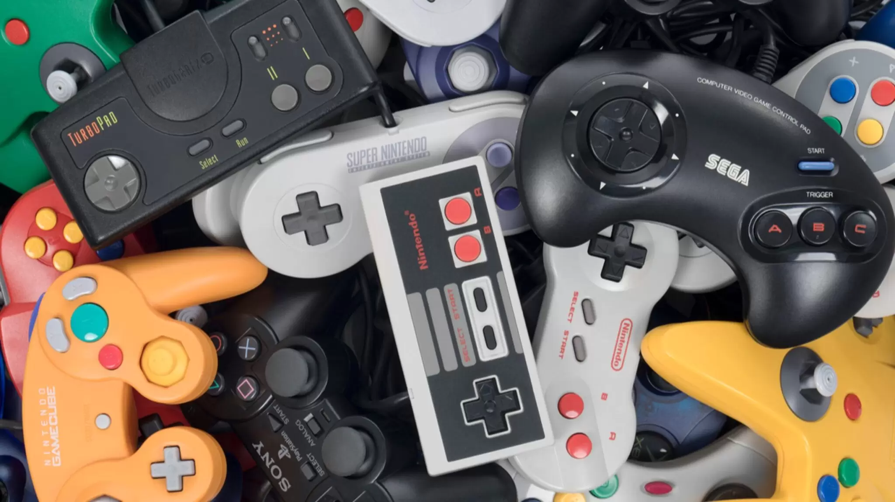

Démonstration d'un jeu réalisé sur Godot
Présentation des personnages
.png)
Filboy
Brillant informaticien de jour, justicier en soubrette la nuit, sous sa jupe à volants et son tablier immaculé, Filboy cache un génie du code et un cœur vaillant. D’une loyauté sans faille envers les données propres et les systèmes bien rangés, il n’hésite pas à plonger dans les serveurs corrompus pour restaurer l’ordre. Mais attention : une simple éclaboussure d’eau suffit à le paralyser dû à sa faiblesse et phobie des douches.
.png)
Lavobot
Programmé pour nettoyer, perfectionné pour attaquer, Lavobot est un robot de maintenance devenu menace. Son arme principale ? Un flexible de douche à haute pression. Il traque Filboy avec un seul objectif : le tremper. Froid, méthodique et toujours propre.
.png)
Daveoiseau
Toujours perché sur une étagère ou planant dans les airs, Daveoiseau est le fidèle compagnon de Filboy. Doté d’un flair infaillible pour repérer les pièges et les raccourcis, il aide le héros en sifflant des indices.